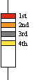

| Harta Site |
| Start | Tehnica | Legislatie | Protectia muncii | Reguli de trafic | Examen online | Examen oficial |
|  |
Benzile colorate trebuie citite dinspre capat spre centru, prima banda este foarte aproape de margine. Banda 1: Prima cifra din valoarea rezistentei. Banda 2: A doua cifra din valoarea rezistentei. Banda 3: Multiplicator, putere a lui 10 Banda 4: Existenta sau chiar absenta benzii 4 marcheaza toleranta rezistorului, adica procentajul de abatere posibila de la valoarea inscrisa prin primele 3 benzi. |
| CULOARE | VALOARE |
| negru | 0 |
| maro | 1 |
| rosu | 2 |
| portocaliu | 3 |
| galben | 4 |
| verde | 5 |
| albastru | 6 |
| violet | 7 |
| gri | 8 |
| alb | 9 |
| auriu |
banda 3:muliplicare*10-1(rezistoare sub-ohmice) banda 4:toleranta de -5% |
| argintiu |
banda 3: multiplicare *10-2(rezistoare sub-ohmice) banda 4:toleranta de -10% |
| lipsa banda | banda 4: toleranta -20% |